Gìn giữ và lan tỏa bản sắc dân tộc
Bảo tồn, truyền bá và phát triển nghệ thuật Chèo truyền thống trong đời sống đương đại.
Chiếu chèo mang sắc phục người lính
Hơn bảy thập kỷ xây dựng, chiến đấu và trưởng thành cùng những chặng đường vẻ vang của Quân đội nhân dân Việt Nam.
Tổng quan
Nhà hát Chèo Quân đội là đơn vị nghệ thuật chuyên nghiệp trực thuộc Tổng cục Chính trị, Quân đội nhân dân Việt Nam. Được thành lập ngày 01 tháng 10 năm 1954 với tiền thân là Đội Văn công - Tổng cục Cung cấp, đến nay Nhà hát đã trải qua hơn bảy thập kỷ xây dựng, chiến đấu và trưởng thành cùng những chặng đường vẻ vang của Quân đội nhân dân Việt Nam.
Là đơn vị nghệ thuật truyền thống hiếm có: một “chiếu chèo” mang sắc phục người lính. Trong khi nghệ thuật Chèo vốn sinh ra từ cái nôi văn hóa đồng bằng Bắc Bộ, Nhà hát Chèo Quân đội đã bồi đắp cho loại hình này thêm một “chiếu chèo mới” - “chiếu chèo bộ đội” - nơi tiếng hát chèo hòa cùng nhịp bước hành quân và hình tượng anh Bộ đội Cụ Hồ.
Con đường phát triển của Nhà hát được định hình bởi hai hướng đi song hành. Một mặt, Nhà hát gìn giữ, bảo tồn và phát huy vốn chèo truyền thống, chèo cổ của dân tộc. Mặt khác, Nhà hát chuyên sâu về đề tài lực lượng vũ trang và chiến tranh cách mạng, xây dựng hình tượng người chiến sĩ qua mọi thời kỳ, đây cũng chính là thế mạnh làm nên bản sắc riêng. Chính sự kết hợp này tạo nên phong cách nghệ thuật độc đáo, không thể lẫn với bất kỳ đơn vị chèo chuyên nghiệp nào khác.
Với những cống hiến bền bỉ cho nền văn hóa nghệ thuật quân đội và sự nghiệp bảo vệ Tổ quốc, Nhà hát Chèo Quân đội đã được Nhà nước phong tặng danh hiệu Anh hùng Lực lượng vũ trang nhân dân (năm 2004) cùng nhiều phần thưởng cao quý khác.
Sứ mệnh
Là đơn vị nghệ thuật - tuyên truyền đại diện cho Quân đội, Nhà hát Chèo Quân đội mang sứ mệnh:
Bảo tồn, truyền bá và phát triển nghệ thuật Chèo truyền thống trong đời sống đương đại.
Xây dựng, bồi dưỡng và lan tỏa phẩm chất, nhân cách người chiến sĩ cách mạng qua từng vở diễn.
Mang lời ca tiếng hát đến với cán bộ, chiến sĩ và nhân dân trên khắp mọi miền Tổ quốc, từ đồng bằng, biên giới đến hải đảo xa xôi.
Tuyên truyền đường lối, chủ trương của Đảng, Nhà nước và Quân đội; nâng cao đời sống tinh thần và bản lĩnh chính trị của người lính.
Tầm nhìn
Khẳng định vị thế là “chiếu chèo chiến sĩ” tiêu biểu, nơi gìn giữ vẹn nguyên những giá trị cốt lõi của nghệ thuật truyền thống, đồng thời không ngừng sáng tạo để đồng hành cùng thời đại. Trong kỷ nguyên số, Nhà hát tiên phong đưa tiếng chèo đến gần hơn với công chúng và thế hệ trẻ qua các phương thức truyền thông hiện đại. Đó là hành trình để bản sắc văn hóa ngàn năm và tầm vóc của một Quân đội chính quy, tinh nhuệ, hiện đại cùng cộng hưởng, tỏa sáng và trường tồn.
Giá trị cốt lõi
Bản sắc phong cách của Nhà hát Chèo Quân đội được kết tinh từ ba thành tố chủ đạo:
Nghệ thuật gắn liền với đường lối, tư tưởng của Đảng và Quân đội nhân dân Việt Nam, mỗi vở diễn là một tác phẩm nghệ thuật đồng thời là một bài học chính trị & tư tưởng.
Phản ánh tinh thần kiên cường, bất khuất của người lính qua mọi thời kỳ, từ chiến trường ác liệt đến những thử thách trong thời bình.
Chiều sâu trí tuệ và tinh thần nhân văn trong văn hóa quân sự Việt Nam - khắc họa người lính không chỉ anh dũng mà còn giàu lý tưởng, tình cảm và đời sống nội tâm.
Chức năng, nhiệm vụ
Quyết định số 294/NQ-BQP ngày 02/02/2010 của Bộ Quốc phòng
Theo Quyết định số 294/NQ-BQP ngày 02/02/2010 của Bộ Quốc phòng, Nhà hát Chèo Quân đội có chức năng truyền bá và phát huy các giá trị nghệ thuật tiên tiến, đậm đà bản sắc dân tộc, xây dựng các chương trình nghệ thuật về đề tài lực lượng vũ trang và chiến tranh cách mạng. Đồng thời góp phần tuyên truyền đường lối, chủ trương, chính sách của Đảng, Nhà nước và Quân đội; bồi dưỡng phẩm chất, nhân cách Bộ đội Cụ Hồ và nâng cao trình độ thẩm mỹ của công chúng.
Năng lực của Nhà hát thể hiện trên các mặt hoạt động chính:
Nghiên cứu, sáng tác và bảo tồn các tác phẩm nghệ thuật phản ánh cuộc sống, chiến đấu, lao động, học tập của lực lượng vũ trang nhân dân và tinh hoa văn hóa nghệ thuật dân tộc.
Biểu diễn phổ biến tác phẩm phục vụ bộ đội và nhân dân trên khắp mọi miền Tổ quốc, từ đồng bằng, biên giới đến hải đảo xa xôi.
Giữ gìn, truyền bá và phát triển nghệ thuật Chèo của dân tộc; đấu tranh phòng, chống sự xâm nhập của các sản phẩm văn hóa xấu độc, bảo vệ giá trị văn hóa tốt đẹp của dân tộc và Quân đội.
Nhiều vở diễn đạt Huy chương Vàng, Huy chương Bạc tại các hội diễn, liên hoan sân khấu chuyên nghiệp toàn quân và toàn quốc; có tác phẩm được trao Giải thưởng Hồ Chí Minh.
Qua các thời kỳ
Những người đứng đầu đơn vị từ ngày thành lập năm 1954, khi còn là Đội Văn công Tổng cục Cung cấp, cho tới Nhà hát Chèo Quân đội hôm nay. Chỗ nào chưa có tư liệu thì để trống chờ bổ sung.
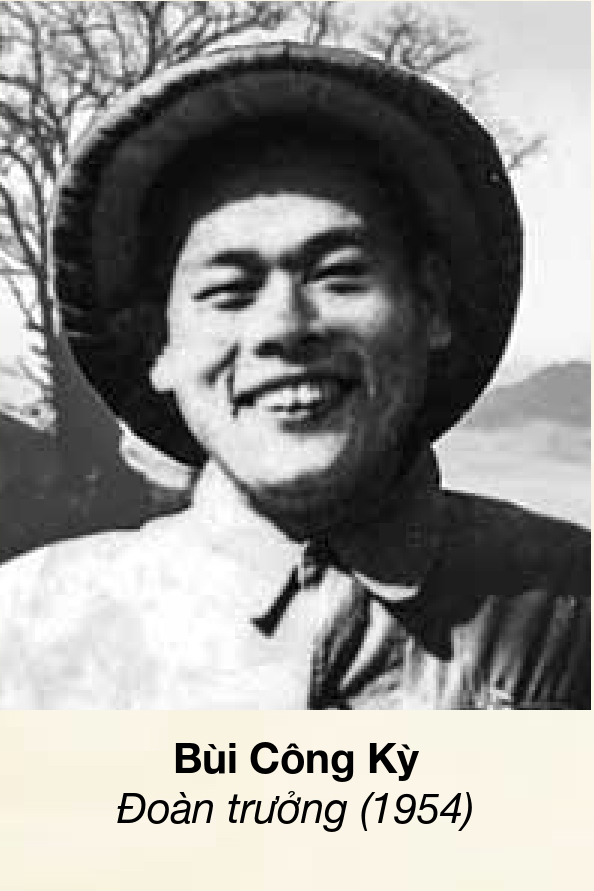
Đoàn trưởng · 1954
Đoàn trưởng · 1954 - 1969
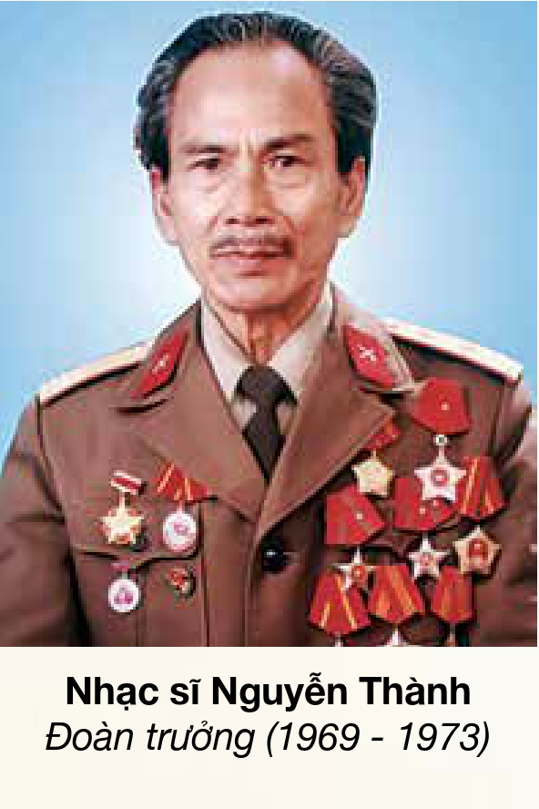
Đoàn trưởng · 1969 - 1973
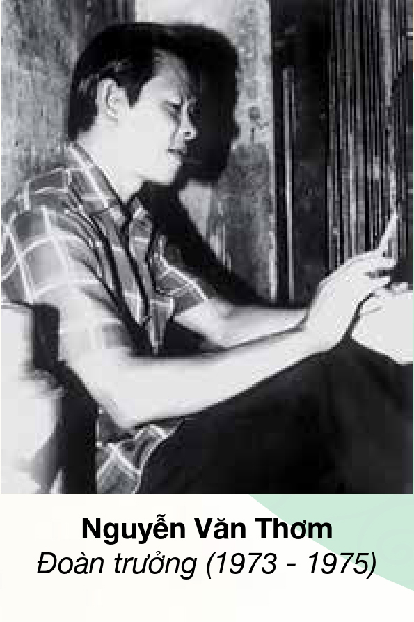
Đoàn trưởng · 1973 - 1975
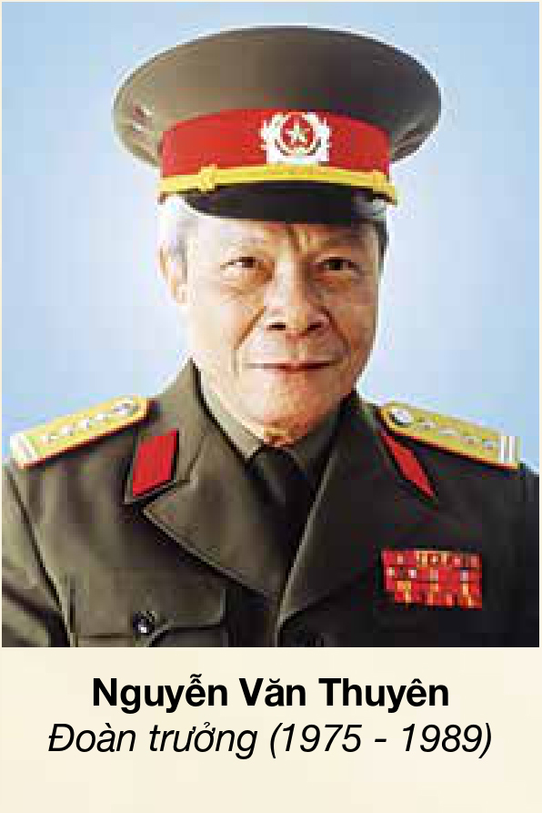
Đoàn trưởng · 1975 - 1989
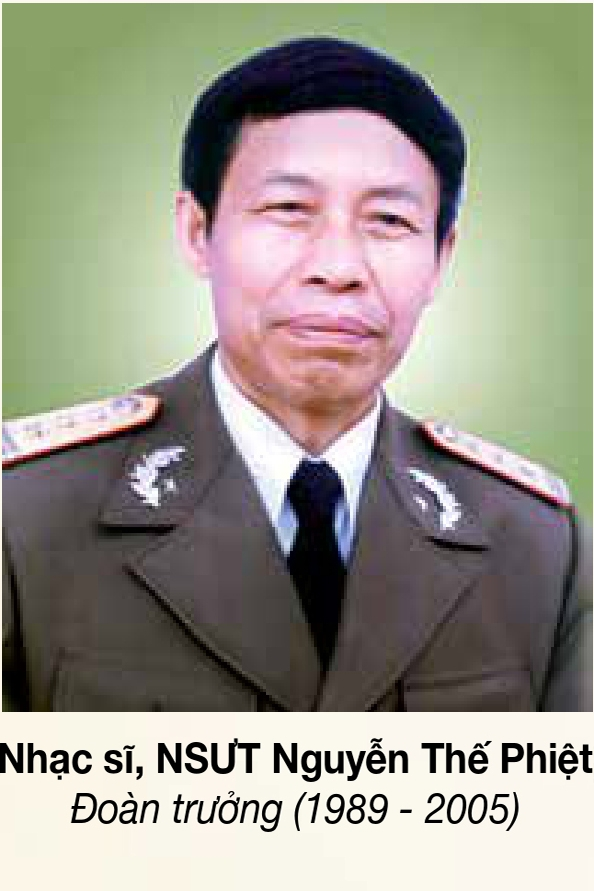
Đoàn trưởng · 1989 - 2005
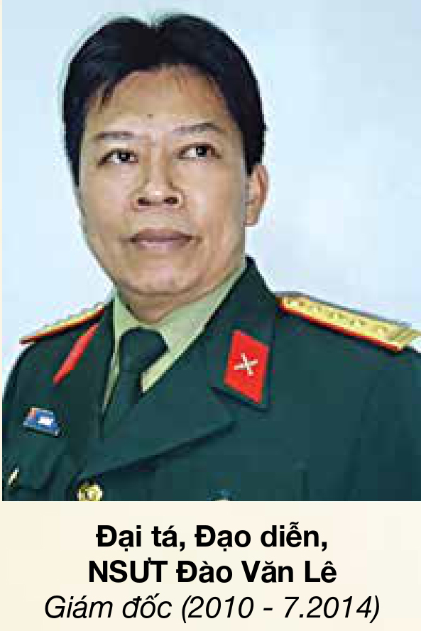
Đoàn trưởng, rồi Giám đốc · 2005 - 2009 · 2010 - 7.2014
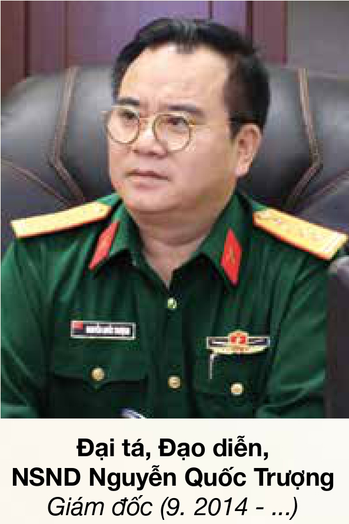
Giám đốc · 9.2014 - 12.2024
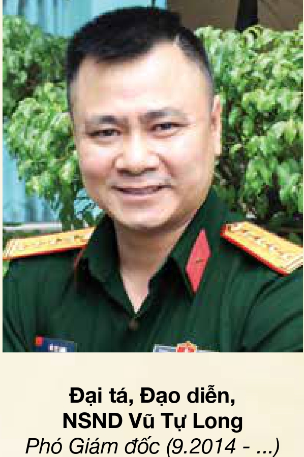
Phó Giám đốc 9.2014 - 12.2024 · Giám đốc từ 1.2025
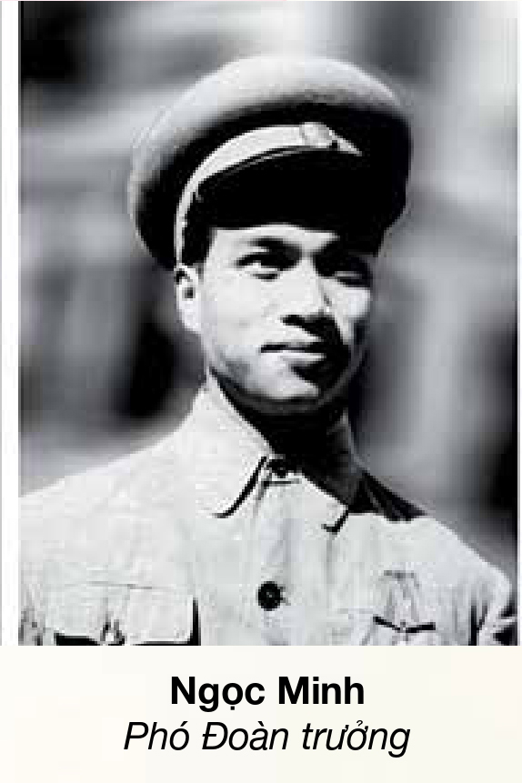
Phó Đoàn trưởng
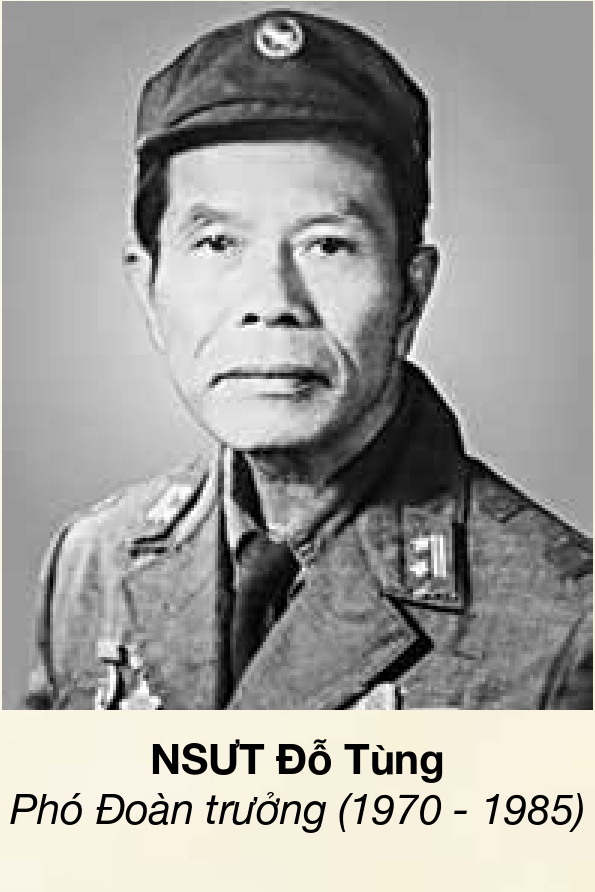
Phó Đoàn trưởng · 1970 - 1985
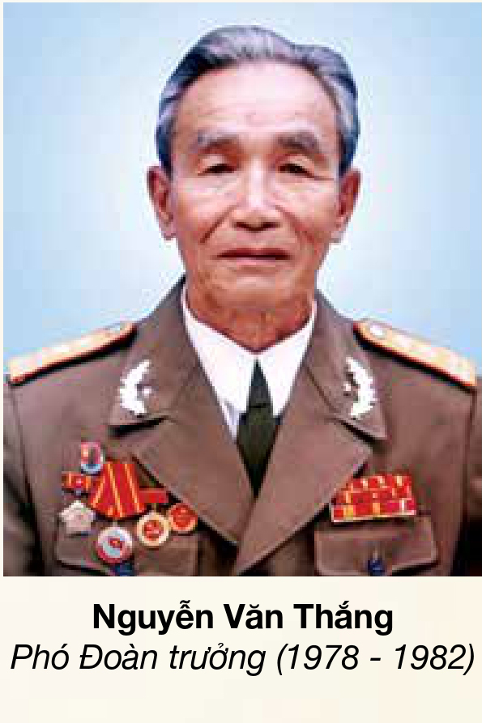
Phó Đoàn trưởng · 1978 - 1982
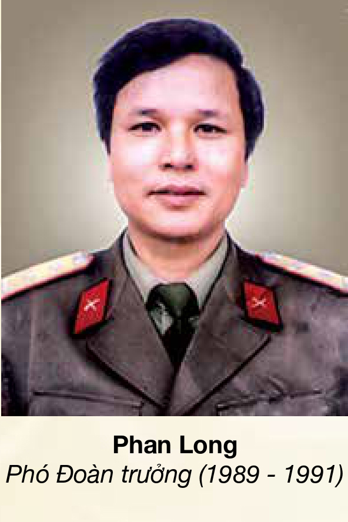
Phó Đoàn trưởng · 1989 - 1991
Phó Đoàn trưởng · 2002 - 2009
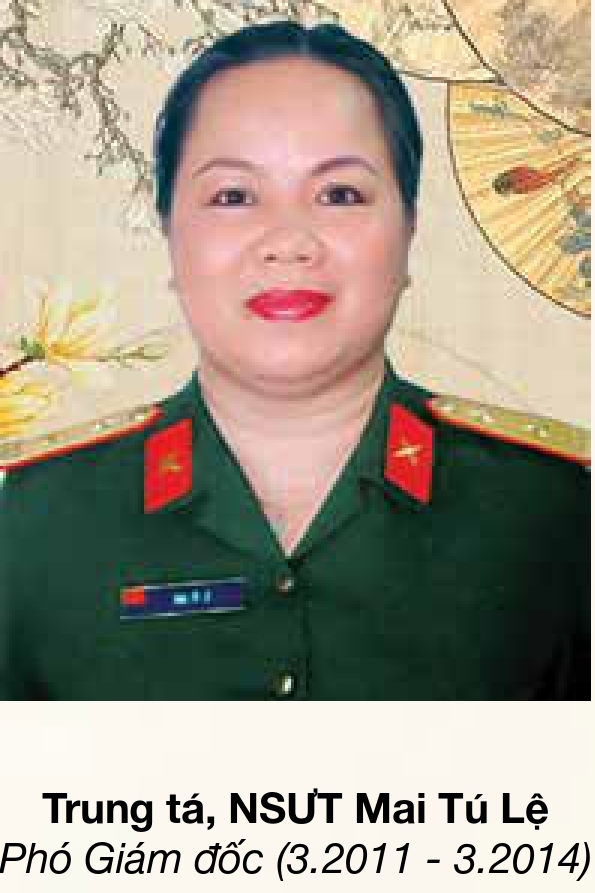
Phó Giám đốc · 3.2011 - 3.2014
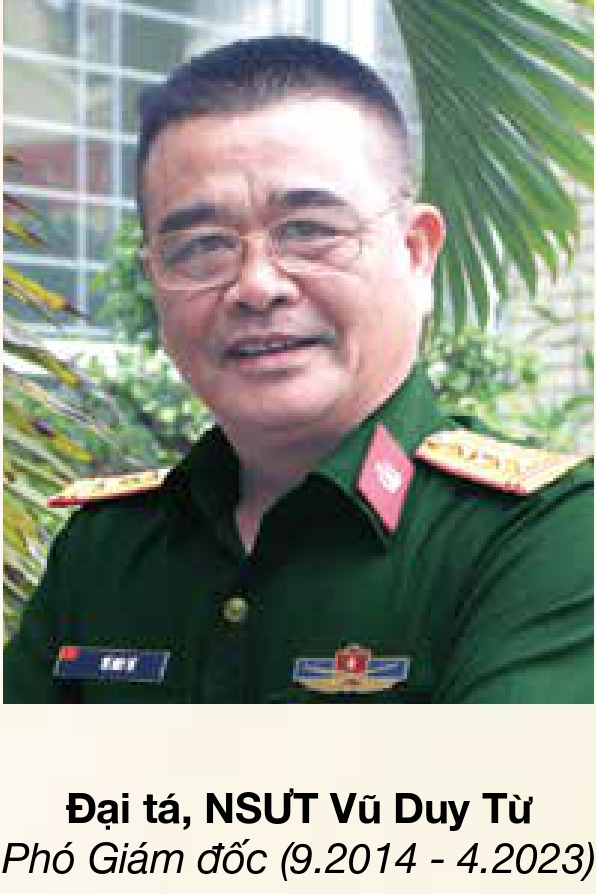
Phó Giám đốc · 9.2014 - 4.2023
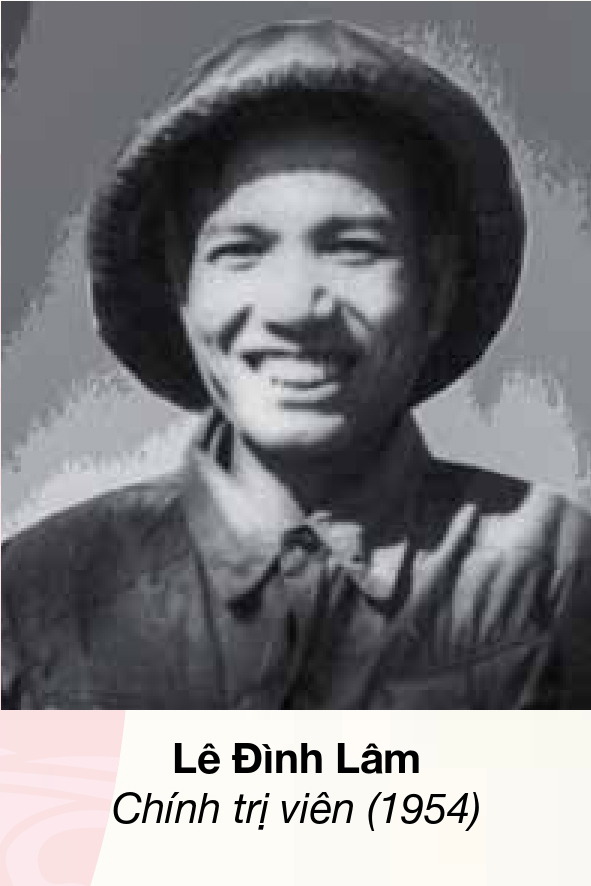
Chính trị viên · 1954
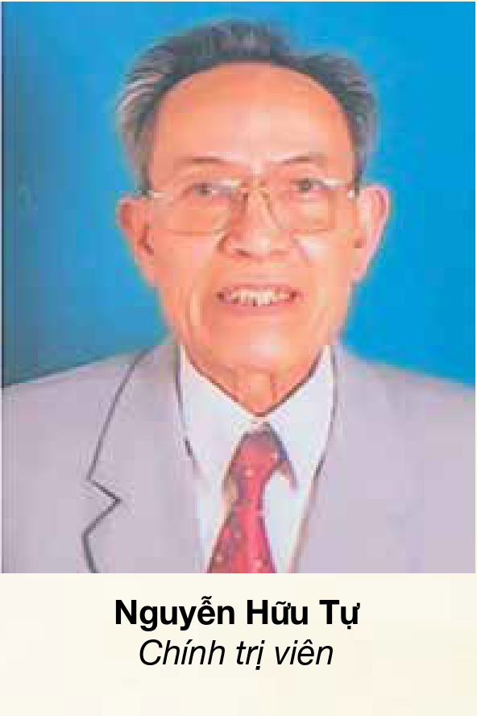
Chính trị viên
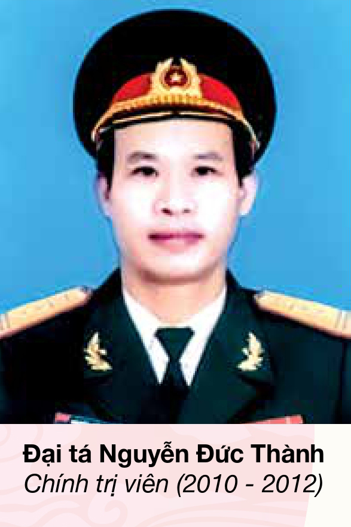
Chính trị viên · 2010 - 2012
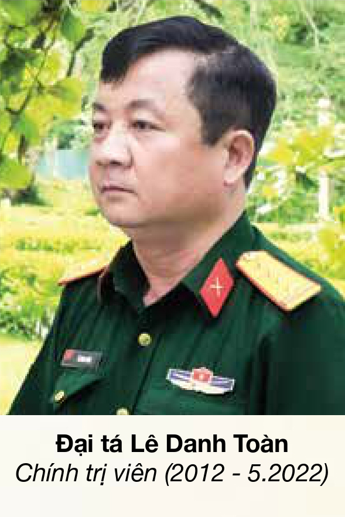
Chính trị viên · 2012 - 5.2022
Chính trị viên · từ 6.2022
Toàn bộ suất diễn của Nhà hát đều miễn phí. Giữ chỗ trực tuyến, mời biểu diễn hoặc tìm hiểu về các lớp truyền dạy nghệ thuật Chèo.